▲ 암반 위에 자리한 거연정과 이어진 다리. 초록이 짙은 계절 사진이고 촬영 연도는 확인하지 못했다. 사진=한국관광공사
"함양 화림동 계곡 정자 길, 입장료는 있고 주차는 어디에 하며 얼마나 걸어야 할까?" 2026년 10월 18일 기준으로 함양군 문화관광포털, 국가유산포털(국가유산청), 한국관광공사 자료에서 확인한 내용만 모았다. 거연정에서 농월정까지 6.2km 선비문화탐방로는 함양군 안내상 도보 약 2시간이다. 거연정은 국가지정 명승이지만 이름이 널리 알려진 관광지는 아니라서, 가을 단풍철에 상대적으로 한적하게 걷기 좋은 흔치 않은 계곡 코스다. 함양군 선비문화탐방로 안내 바로가기
💡 먼저 결론
화림동계곡의 정자는 한국관광공사 자료상 거연정·농월정·동호정·군자정 모두 연중무휴, 상시 개방으로 안내돼 있고 별도 입장료 항목은 확인하지 못했다. 거연정·동호정·농월정은 주차 가능, 군자정은 주차 불가로 표기돼 있다. 제목의 '정자 7곳'은 함양군 탐방로 경유지에 오른 정자 이름을 센 수치이고, 같은 함양군 설명은 옛 팔담팔정 가운데 지금은 농월정을 포함해 4곳이 남았다고 적는다. 일몰 시각은 공식 값이 아닌 천문 계산 근사값만 실었다.
1. 한눈에 보기 — 공식 자료로 확인한 것과 못 한 것
화림동계곡은 남덕유산(해발 1,508m)에서 발원한 금천이 서상·서하를 거쳐 안의 쪽으로 흐르는 약 60리(15km) 계곡이다. 함양군은 이곳을 정자 문화의 메카라고 소개한다. 안의면에서 육십령 방향 26번 국도를 따라 약 4km 오르면 농월정 계곡에 닿는다.
| 항목 | 내용 | 확인 근거 |
|---|---|---|
| 선비문화탐방로 | 거연정~농월정 총연장 6.2km, 2004~2006년 조성, 사업비 16억 원 | 함양군 문화관광포털 |
| 걷기 소요 | 거연정~농월정 약 2시간(1코스 6.1km도 약 2시간) | 함양군 문화관광포털 |
| 개방·휴무 | 상시 개방, 연중무휴(거연정·동호정·군자정·농월정·선비문화탐방로 항목) | 한국관광공사 TourAPI |
| 입장료 | 공식 요금 항목 없음(TourAPI 이용요금 정보 없음) | — |
| 주차 | 거연정·동호정·농월정 가능, 군자정 불가. 요금·면수는 확인하지 못함 | 한국관광공사 TourAPI |
| 문의 | 함양군 관광안내소 055-960-5756, 관광진흥과 055-960-4510(탐방로는 TourAPI에 055-960-4515로 표기) | 한국관광공사·함양군 |
| 일몰 시각 | 아래 6장의 천문 계산 근사값 참고, 방문 당일 값은 한국천문연구원 확인 | 계산값 |
| 올해 단풍 절정일 | 화림동 별도 예측 확인하지 못함 | — |
함양군 농월정 페이지의 최종 수정일은 2023년 9월 25일이다. 정자 개·보수, 탐방로 공사나 통제는 출발 전 함양군에 확인하는 편이 안전하다. 대한민국 구석구석 바로가기
2. 팔담팔정 — 몇 곳이 남았나
"팔담팔정(八潭八亭)"은 계곡에 여덟 개의 못(담)과 여덟 개의 정자가 있었다는 이야기다. 함양군 문화관광포털의 농월정 설명은 금천이 굽이치며 8담 8정을 이루었다고 전해지며, 지금도 농월정을 비롯한 4개의 고풍스러운 정자가 남아 있다고 적었다. 함양군 농월정 안내 바로가기
여덟 곳의 정자와 못의 이름을 정리한 공식 목록은 찾지 못했다. 함양군 선비문화탐방로 안내의 경유지는 거연정(군자정)·영귀정·동호정·경모정·람천정·농월정으로, 군자정을 따로 세면 이름 7개가 나온다. 이 글 제목의 '7곳'이 여기서 나온 수치다. 다만 같은 함양군의 화림동계곡 소개는 농월정·경모정·동호정·거연정·군자정 5곳만 거론하고, 농월정 소개는 '4곳이 남았다'고 적어 자료마다 수가 다르다. 그래서 이 글은 팔담팔정의 구성을 단정하지 않고 확인된 정자만 다룬다. 함양군 화림동계곡 안내 바로가기
| 자료 | 서술 |
|---|---|
| 함양군 농월정 안내 | 8담 8정을 이루었다고 전해짐, 지금은 농월정 포함 4개 남음 |
| 함양군 화림동계곡 안내 | 농월정·경모정·동호정·거연정·군자정 언급(5곳) |
| 함양군 선비문화탐방로 안내 | 경유지 거연정(군자정)·영귀정·동호정·경모정·람천정·농월정 |
| 한국관광공사 선비문화탐방로 | 거연정·군자정·동호정·농월정 등이 이어지고 팔담팔정으로 불리기도 함 |
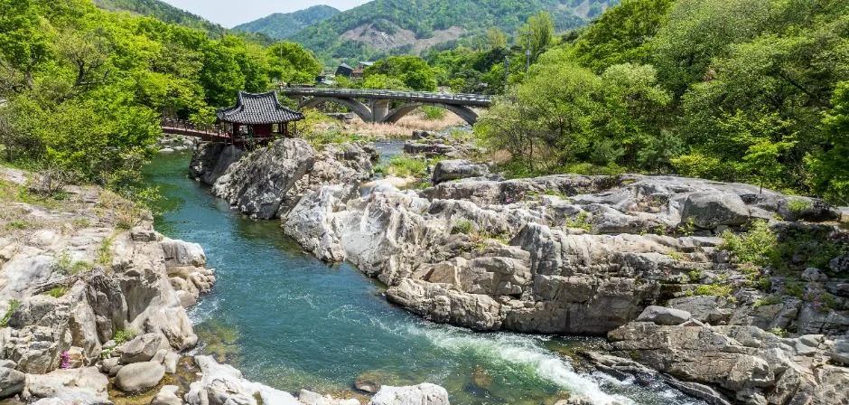
▲ 급류가 흐르는 화림동계곡 암반 위의 거연정 일대. 초록이 짙은 계절 사진이고 촬영 연도는 확인하지 못했다. 사진=한국관광공사
3. 정자별 정보 — 거연정·군자정·동호정·농월정
거연정은 서하면 봉전마을 앞 남강천 암반 위에 있다. 국가유산포털은 이곳을 명승 「함양 화림동 거연정 일원」(명승 제86호)으로 올려 두었고 지정일은 2012년 2월 8일, 면적은 20,143㎡, 관리자는 함양군이다. 건물 자체는 2005년 10월 13일 경상남도 시도유형문화유산(제433호)으로 따로 지정됐다. 국가유산포털 거연정 일원 바로가기
| 정자 | 위치 | 확인한 특징 |
|---|---|---|
| 거연정 | 서하면 육십령로 2582(봉전리) | 명승 제86호, 경남 시도유형문화유산 제433호. 정면 3칸·측면 2칸 중층 누각. 함양군·시도유형문화유산 설명은 1640년경 서산서원 곁에 억새 정자를 처음 지었고 1853년 화재 뒤 복구, 1872년 후손이 서원 재목으로 다시 세운 뒤 1901년 중수했다고 설명(명승 설명은 1872년 건립으로 서술). 일부 언론이 쓰는 1613년 건립설은 공식 설명과 다름 |
| 군자정 | 서하면 육십령로 2590 | 경남 문화유산자료 제380호. 1802년경 정선 전씨 후손이 일두 정여창을 기려 세운 정자. 하천 암반 위의 작은 중층 누각. 거연정에서 함양군은 약 50m 아래, 국가유산 설명은 하류쪽 약 150m로 적어 거리가 다름. 주차 불가로 표기 |
| 동호정 | 서하면 황산리 842 | 경남 문화유산자료 제381호. 임진왜란 때 선조의 피난을 도운 동호 장만리를 기려 후손이 세웠다. 건립은 국가유산 설명 1895년, 한국관광공사 1890년경으로 다름, 1936년 중수. 화림동 정자 중 가장 크고 화려하다고 설명. 천장 단청에 물고기를 문 용 조각 |
| 농월정 | 안의면 월림리 일대, 농월정길 9-13(한국관광공사 관광지 주소) | 지족당 박명부가 머물며 시회를 열었다는 정자. 2003년 화재로 전소, 현재는 새로 복원한 정자(복원 시기는 함양군 자료에 없음). 국민관광지 |
| 경모정 | 서하면 호성마을 | 함양군 안내는 농월정에서 약 2km, 호성마을에 있다고만 적음 |
거연(居然)이라는 이름은 주자의 시 「정사잡영 12수」 중 '거연아천석(居然我泉石)'에서 따온 말이라고 국가유산포털은 설명한다. 같은 설명에 조선 후기 학자 임헌회가 거연정기에서 안의삼동 가운데 화림동이, 화림동 가운데 이 정자가 가장 낫다고 평했다는 대목이 나온다. 정자로 이어지는 다리와 암반, 그 아래 소(沼)를 내려다보는 동선이 이 코스의 핵심 장면이다.
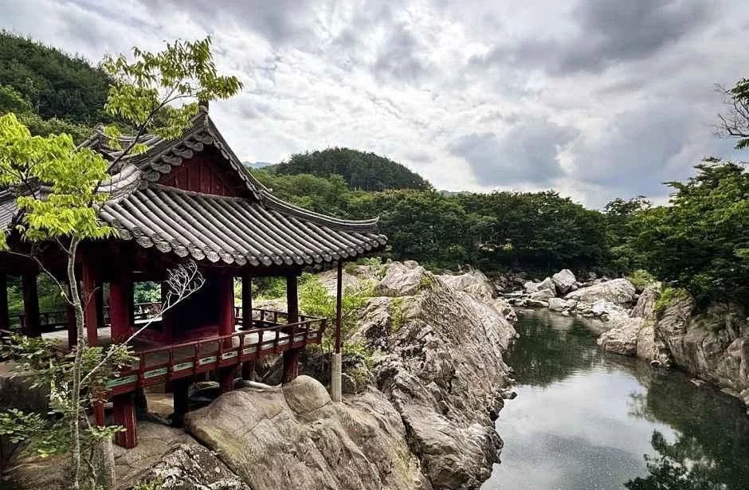
▲ 거연정 일대. 구름이 낀 초록 계절의 사진이며 촬영 연도는 확인하지 못했다. 사진=한국관광공사
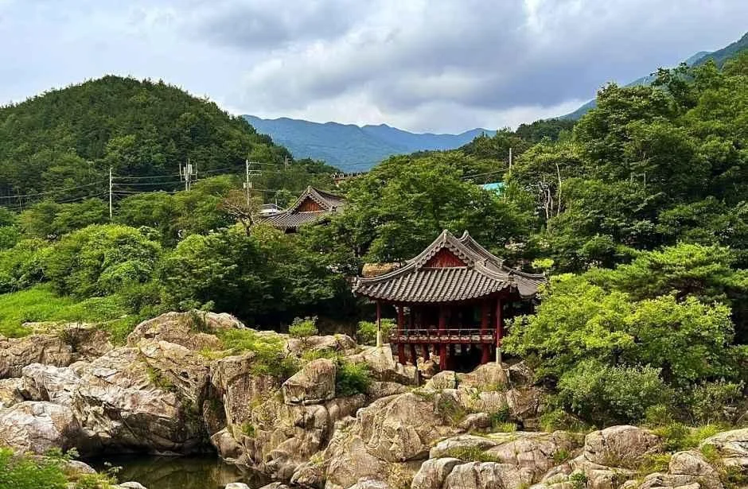
▲ 거연정과 주변 암반·숲 전경. 초록 계절의 사진이다. 사진=한국관광공사
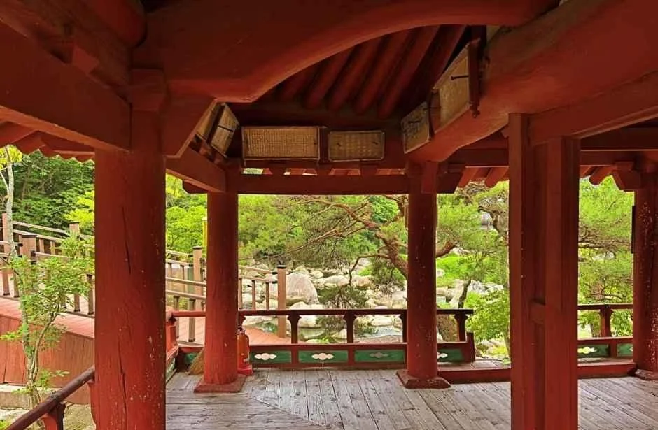
▲ 거연정 누각에서 밖을 내다본 모습. 초록 계절의 사진이다. 사진=한국관광공사
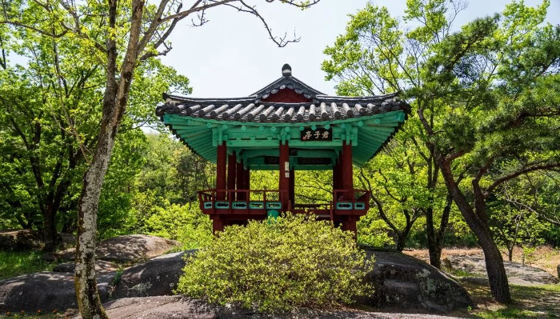
▲ 군자정. 규모는 작지만 바위 위에 지은 정자다. 초록 계절의 사진이다. 사진=한국관광공사
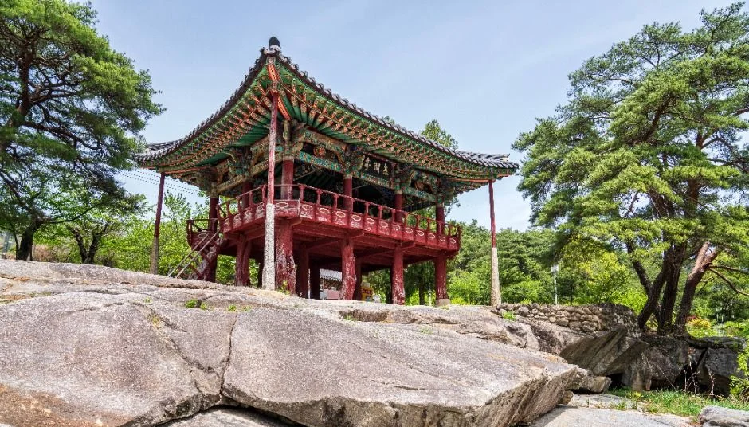
▲ 동호정. 국가유산 설명상 화림동 정자 가운데 가장 크고 화려하다. 사진=한국관광공사
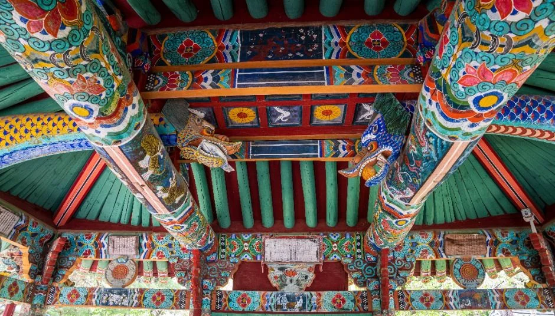
▲ 동호정 누각의 단청. 한국관광공사 설명은 천장에 물고기를 문 용 조각이 있다고 소개한다. 사진=한국관광공사
동호정은 남강천 담소 가운데 하나인 옥녀담 위에 있다. 국가유산 설명에 따르면 강 가운데 노래하던 영가대, 악기를 연주하던 금적암, 술을 마시던 차일암이 있고, 차일암은 수백 평의 넓은 암반이다. 이름의 유래는 공식 자료에서 더 확인하지 못했다.
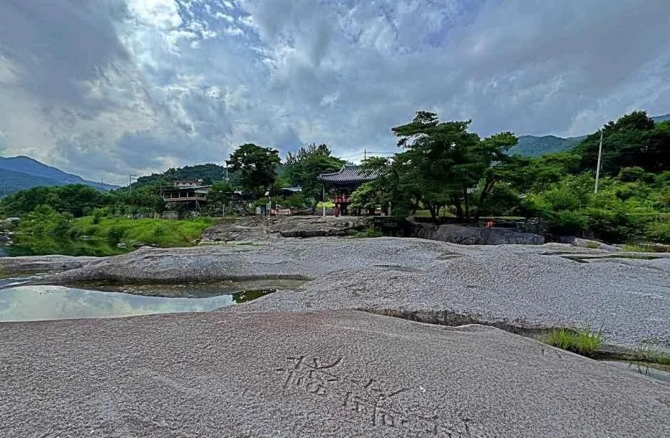
▲ 동호정 일대의 넓은 암반. 바위 표면의 글씨가 보인다. 구름 낀 날의 사진이며 촬영 연도는 확인하지 못했다. 사진=한국관광공사
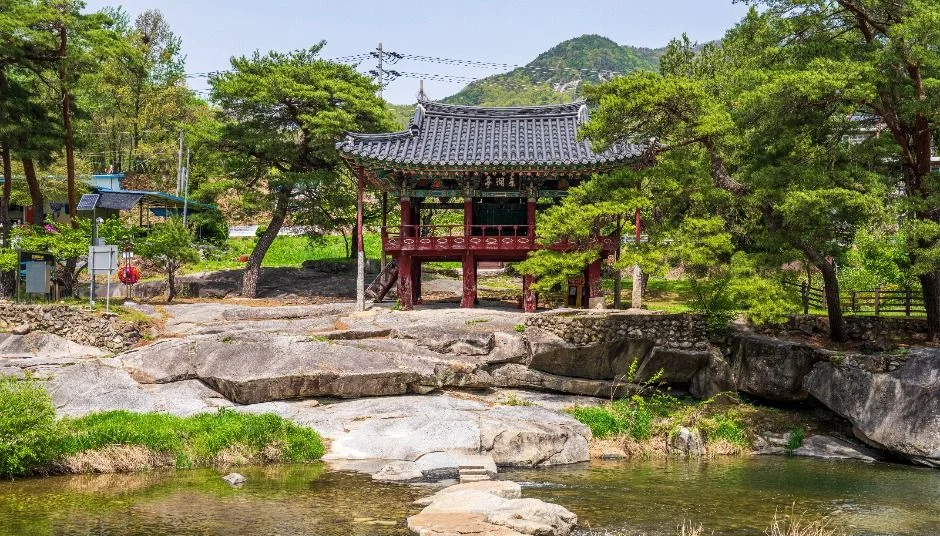
▲ 물가 징검돌 너머의 정자. 초록 계절에 찍은 사진이다. 사진=한국관광공사
4. 걷기 코스 — 거연정에서 농월정까지
함양군 안내는 두 가지 코스를 제시한다. 정자 위주의 1코스는 선비문화관에서 영귀정, 다곡교, 동호정, 호성마을, 람천정, 황암사를 지나 농월정에 닿고 6.1km에 약 2시간이다. 2코스는 농월정에서 월림마을, 구로정, 점풍교, 오리숲을 지나 광풍루로 가는 4.1km 선비탐방로이며 약 1시간 30분이다. 선비문화탐방로 바로가기
| 구분 | 거리·시간 | 경로 |
|---|---|---|
| 조성사업 총연장 | 6.2km, 약 2시간 | 거연정 → 영귀정 → 동호정 → 경모정 → 람천정 → 농월정(경유지 표기) |
| 1코스 정자탐방로 | 6.1km, 약 2시간 | 선비문화관 → 영귀정 → 다곡교 → 동호정 → 호성마을 → 람천정 → 황암사 → 농월정 |
| 2코스 선비탐방로 | 4.1km, 약 1시간 30분 | 농월정 → 월림마을 → 구로정 → 점풍교 → 오리숲 → 광풍루 |
1코스와 2코스는 농월정에서 이어지는 구간이라 6.1km와 4.1km를 더한 10.2km는 선비문화관에서 광풍루까지의 거리에 해당한다. 6.2km는 거연정~농월정 조성사업 총연장이고, 1코스의 6.1km와 거의 같다. 즉 두 숫자가 서로 어긋나는 것이 아니라 기준 구간이 다르다. 다만 선비문화관의 정확한 위치와 6.1km·6.2km의 0.1km 차이는 함양군 페이지에 설명이 없어 확인하지 못했다. 징검다리는 비가 많이 오면 물에 잠길 수 있다는 주의도 함께 적혀 있다.
| 구간 | 함양군 안내 거리 |
|---|---|
| 안의면 → 농월정(26번 국도) | 약 4km |
| 농월정 → 경모정 | 약 2km |
| 경모정 → 동호정·차일암 | 약 1km |
| 동호정 → 거연정 | 약 1km |
| 거연정 → 군자정 | 약 50m(아래쪽) |
이 안내값을 합치면 농월정에서 거연정까지 약 4km다. 국가유산포털은 안의면에서 26번 국도로 동호정까지 약 7km, 거연정까지 약 9km라고 적어 두 정자 사이를 2km로 본다. 탐방로 6.2km는 징검다리와 데크를 따라 구불구불 걷는 길이라 도로 기준 거리와 다르게 나오는 것으로 보이지만, 이는 추정이며 함양군 공식 지도나 안내판 거리는 확인하지 못했다. 실제 걸을 거리는 현장 이정표를 따르자.
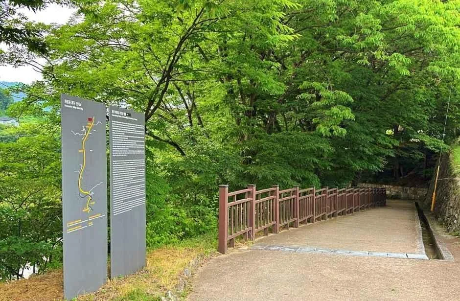
▲ 탐방로의 안내판과 길. 초록이 짙은 계절 사진이며 정확한 위치는 한국관광공사 자료에 표기돼 있지 않다. 사진=한국관광공사
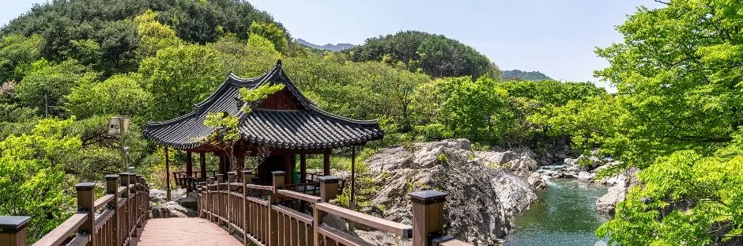
▲ 나무 데크로 이어지는 거연정 일대. 초록 계절의 사진이다. 사진=한국관광공사
5. 진입·주차·요금 — 거연정 입구는 어디인가
거연정의 주소는 서하면 육십령로 2582다. 국가유산포털 설명에 따르면 거연정은 안의면에서 26번 국도를 따라 전주 방향으로 약 9km 떨어진 봉전마을 앞 하천 안에 있다. 한 지역 언론의 2013년 기사는 통영대전고속도로 서상IC에서 나와 26번 국도를 이용하라고 안내했다. 오래된 기사라 도로 사정은 내비게이션으로 한 번 더 확인하자.
| 항목 | 내용 | 미확인 |
|---|---|---|
| 거연정 입구 | 서하면 육십령로 2582, 봉전마을 앞. 안의면에서 26번 국도 전주 방향 약 9km(국가유산포털) | 진입로 폭·주차 면수 |
| 동호정 | 안의면에서 26번 국도 전주 방향 약 7km, 국도에 붙어 있음(국가유산포털). 주차 가능 표기 | 주차 면수·요금 |
| 군자정 | 거연정 아래쪽, 서하면 육십령로 2590 | 주차 불가 표기(TourAPI) |
| 농월정 | 안의면, 농월정 국민관광지. 주차 가능 표기. 야영장·민박 시설이 있다고 함양군이 소개 | 주차 요금·면수 |
| 농월정오토캠핑장 | 농월정길 9-35. 25개 사이트, 한옥 펜션·카라반, 입실 14:00·퇴실 11:00(TourAPI) | 이용 요금, 예약 방법 |
| 대중교통 | 공식 노선 안내 확인하지 못함. 함양군 관광안내소(055-960-5756) 문의 권장 | 버스 노선·배차 |
| 입장료 | 공식 안내에 요금 항목 없음(TourAPI 이용요금 정보 없음) | — |
이용 시간은 한국관광공사 자료에 "상시 개방", 휴무는 "연중무휴"로 표기돼 있다. 다만 TourAPI 정보는 지자체 입력값이라 시설별 사정이 다를 수 있으니 055-960-5756(함양군 관광안내소)에 확인하면 확실하다. 계곡 갓길 주차는 단속 대상이 될 수 있으니 단풍철 갓길 주차 단속 기사도 참고하자.
6. 계절 — 단풍·초겨울·일몰은 어디까지 확인했나
산림청은 2026년 9월 22일 단풍절정 예측지도를 발표했고, 언론 보도에 따르면 전국 주요 산지가 10월 하순부터 절정을 맞는다. 한국관광공사 단풍지도는 경상권이 11월 초중순쯤 절정이라고 보도됐다. 다만 함양 화림동계곡만의 예측은 공식 자료로 찾지 못했다. 이 글에 쓴 사진은 모두 초록 계절이거나 눈 쌓인 겨울 사진이고, 한국관광공사·함양군 자료에서 화림동의 가을 단풍 사진은 찾지 못해 싣지 않았다. 지리산·덕유산권 단풍 시기는 지리산 단풍 절정 기사를 함께 보면 감이 잡힌다.
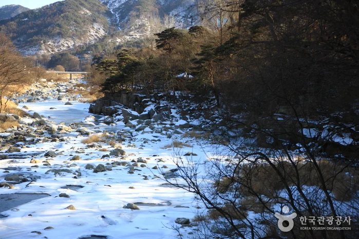
▲ 눈이 쌓인 겨울의 계곡 풍경. 한국관광공사 화림동계곡 항목의 사진으로 촬영 연도는 확인하지 못했다. 원본 그대로 사용(변경금지). 사진=한국관광공사(변경금지)
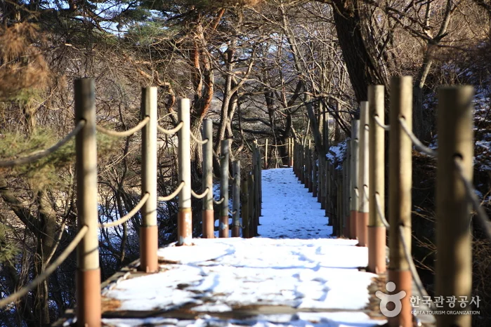
▲ 눈이 덮인 데크길. 한국관광공사 화림동계곡 항목의 사진으로 촬영 연도는 확인하지 못했다. 원본 그대로 사용(변경금지). 사진=한국관광공사(변경금지)
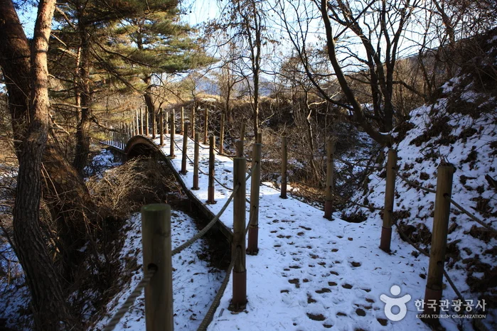
▲ 눈이 쌓인 계곡 옆 산책로. 한국관광공사 화림동계곡 항목의 사진으로 촬영 연도는 확인하지 못했다. 원본 그대로 사용(변경금지). 사진=한국관광공사(변경금지)
초겨울에는 눈이나 결빙으로 데크와 징검다리가 미끄러울 수 있다. 위 겨울 사진처럼 눈이 오면 데크가 덮일 수 있다는 정도만 확인되며, 겨울철 통제나 공사 여부는 공식 안내를 찾지 못했다.
| 날짜 | 일몰(근사) |
|---|---|
| 10월 25일 | 약 17:43 |
| 11월 1일 | 약 17:35 |
| 11월 15일 | 약 17:24 |
| 11월 30일 | 약 17:17 |
위 값은 함양읍 인근 위도·경도로 계산한 근사값이라 한국천문연구원 공식 값과 1~2분 차이가 날 수 있고, 한국천문연구원 출몰시각 자료에서 지역별 공식 값을 직접 확인하지는 못했다. 산으로 둘러싸인 계곡은 일몰보다 먼저 그늘이 지기 쉬워 해가 지기 한 시간 전에는 걷기를 마치는 편이 안전하다.
7. 연계 코스 — 안의 광풍루·용추계곡·함양 상림
함양군의 2코스는 농월정에서 광풍루까지 이어지는 4.1km다. 광풍루는 안의면 강변로 303에 있는 2층 누각으로, 국가유산포털 기준 경상남도 시도유형문화유산 제92호(1974년 지정)다. 설명에 따르면 1412년 선화루라는 이름으로 처음 지었고 1425년 지금 자리로 옮겼으며, 1494년 정여창이 다시 지으며 광풍루로 이름을 바꿨다. 정유재란 때 불탄 뒤 1601년 복원했고 1683년 다시 지었다. 관람 시간과 요금 정보는 확인하지 못했다.
안의면의 기백산 용추계곡·용추폭포(신안리)는 한국관광공사에 상시 개방·연중무휴, 주차 가능으로 표기돼 있고 문의는 055-960-5471이다. 입구에 심원정이 있고 안쪽에 장수사 일주문과 용추사, 용추폭포가 이어진다고 소개된다.
| 장소 | 확인한 내용 | 미확인 |
|---|---|---|
| 안의 광풍루 | 안의면 강변로 303, 경남 시도유형문화유산 제92호, 함양군 2코스 종점 | 관람 시간·요금 |
| 기백산 용추계곡·용추폭포 | 안의면 신안리, 상시 개방·연중무휴, 주차 가능(TourAPI), 문의 055-960-5471 | 주차 요금 |
| 함양 상림공원 | 함양읍 교산리. 본 사이트 기사 참고 | 화림동과의 이동 시간 |
| 개평한옥마을 | 지곡면 개평길 59, 한국관광공사 관광지 정보 | 운영 시간 |
함양읍의 상림 숲은 함양 상림 은행나무길·거창 수승대 기사에서 다뤘다. 가을 계곡 드라이브라면 무주 적상산 단풍 드라이브 기사도 같은 덕유산권 코스로 이어 볼 만하다.
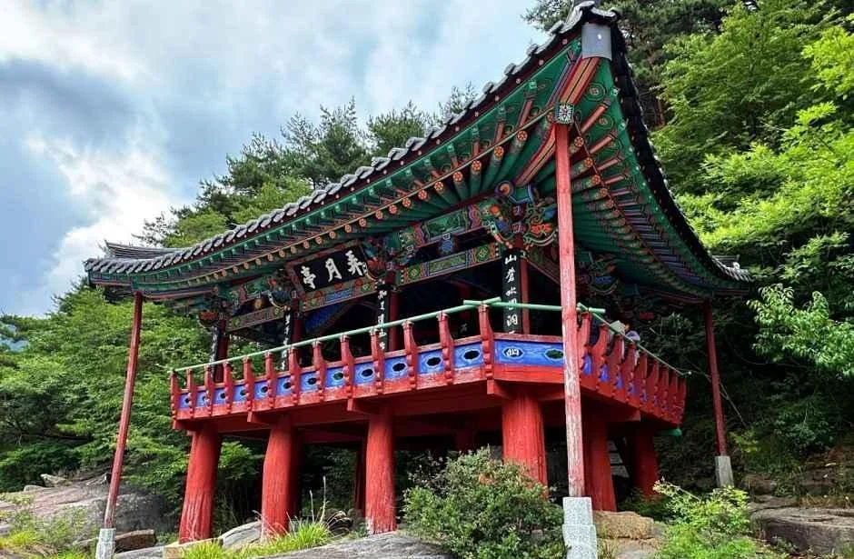
▲ 복원된 농월정. 초록 계절의 사진이다. 사진=한국관광공사
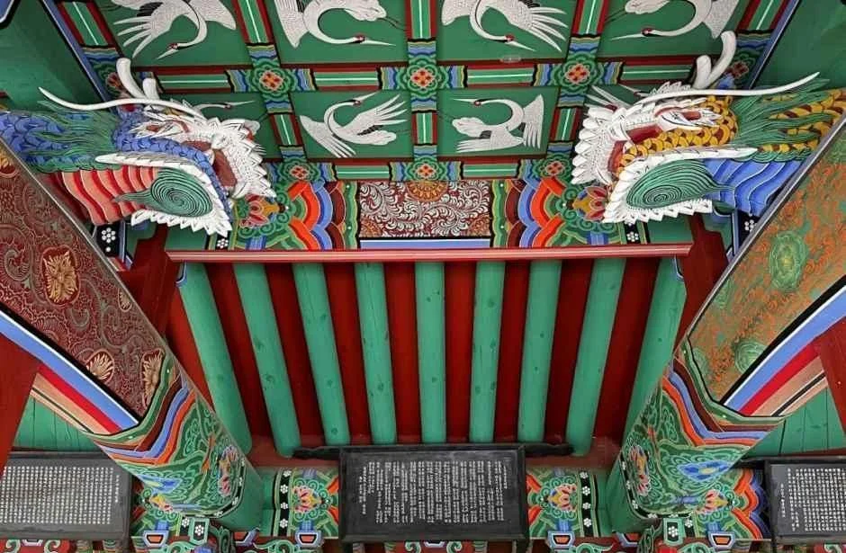
▲ 농월정 누각 내부의 단청과 용 조각. 사진=한국관광공사
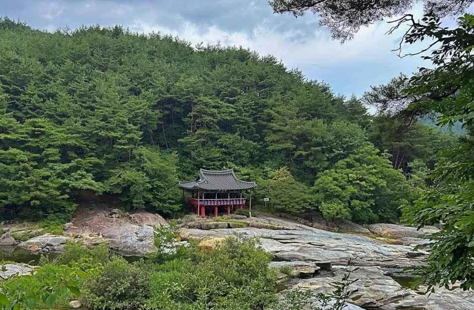
▲ 멀리서 본 농월정과 너럭바위. 초록 계절의 사진이다. 사진=한국관광공사
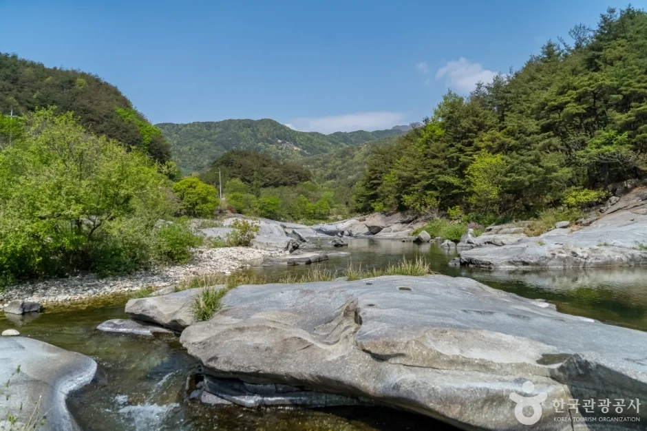
▲ 농월정 국민관광지의 암반 계곡. 한국관광공사 농월정 항목의 사진으로 촬영 시기는 확인하지 못했다(원본 그대로). 사진=한국관광공사(변경금지)
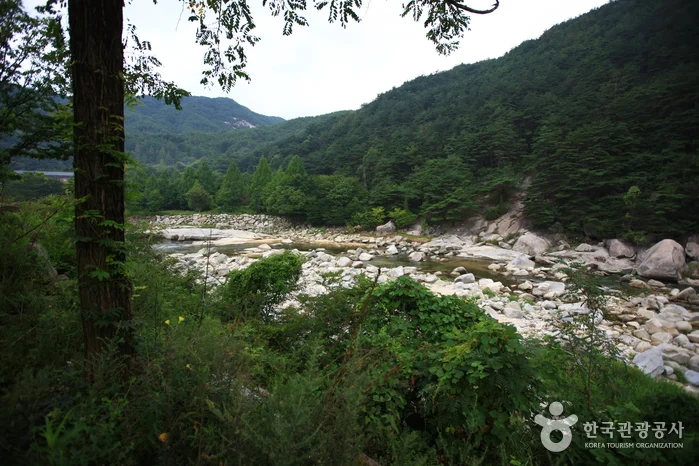
▲ 숲이 우거진 화림동계곡의 암반. 초록 계절의 사진이며 촬영 연도는 확인하지 못했다(원본 그대로). 사진=한국관광공사(변경금지)
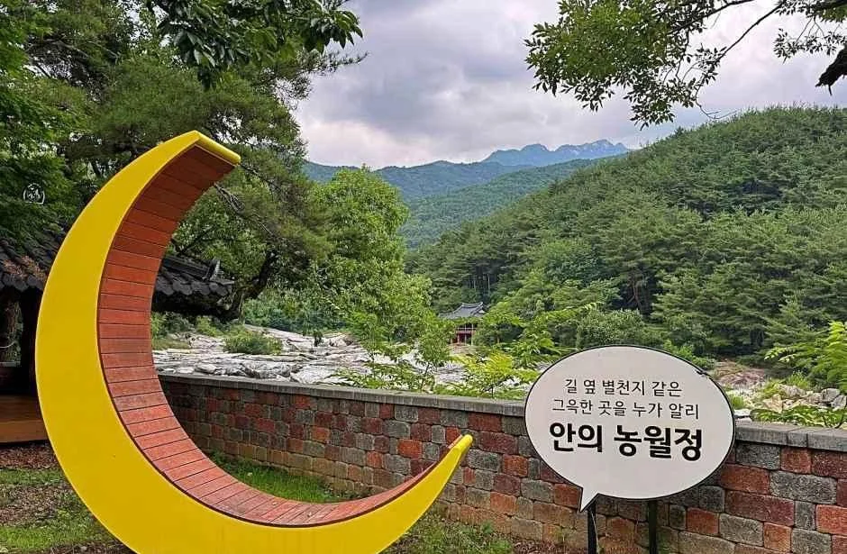
▲ 농월정 국민관광지의 초승달 조형물. 달을 희롱한다는 농월(弄月)을 떠올리게 하는 포토존이다. 사진=한국관광공사
✅ 출발 전 체크
1) 상시 개방·연중무휴로 표기되나 055-960-5756으로 확인 2) 군자정은 주차 불가, 거연정·동호정·농월정은 주차 가능 3) 징검다리는 비 온 뒤 침수 가능 4) 일몰은 한국천문연구원 값으로 당일 확인(위 근사값은 참고용) 5) 사진은 초록 계절과 겨울 위주이고 촬영 연도는 모두 미상.
8. 정리
화림동 정자 길은 거연정~농월정 6.2km, 도보 약 2시간이며 정자들은 상시 개방·연중무휴로 안내돼 있다. 거연정은 명승 제86호이자 경남 시도유형문화유산이고 농월정은 2003년 화재 후 복원됐다. 함양군 탐방로 경유지에는 정자 이름 7개가 오르지만, 함양군 스스로 옛 팔담팔정 가운데 4곳이 남았다고 적는다.
팔담팔정의 정확한 목록, 입장료·주차 요금, 공식 일몰 시각, 올해 화림동 단풍 절정일, 겨울 통제 여부, 대중교통은 확인하지 못했다. 이 글은 2026년 10월 18일 기준이므로 방문 전 함양군에 한 번 더 확인하자.